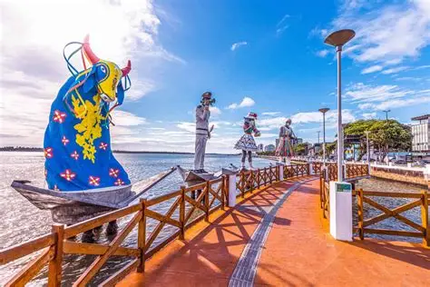
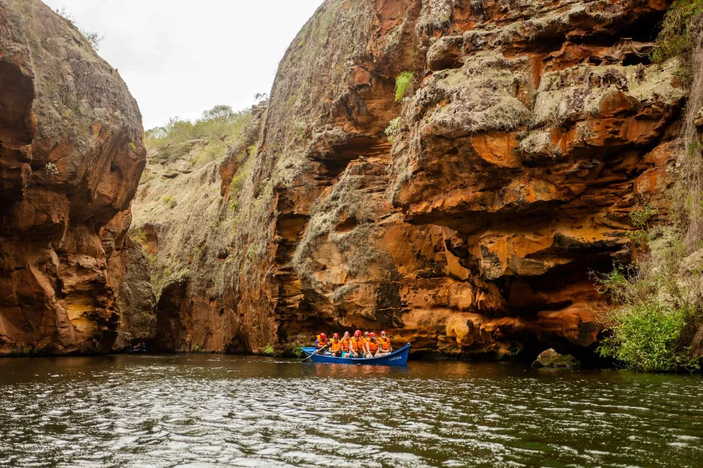
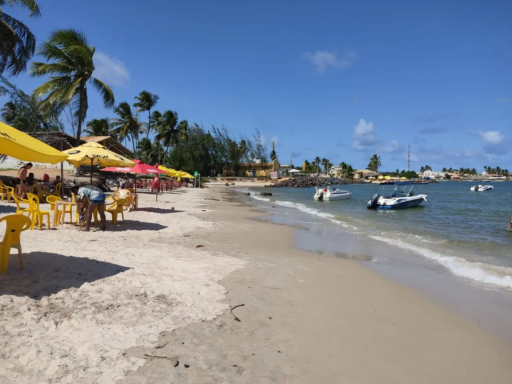

Lugares para visitar em Sergipe
Passear no Cânion

No alto sertão sergipano, a 213 quilômetros da capital, Aracaju, no município Canindé de São Francisco, está uma das atrações mais impressionantes do interior de Sergipe, os Cânions do Xingó.
Com 65 km de extensão e paredes rochosas de até 50 metros de altura que embelezam ainda mais o Rio São Francisco, a beleza natural da região proporciona passeios de barco inesquecíveis por suas águas esmeraldas e paredões rochosos. O passeio pode ser complementado pela visita ao Museu de Arqueologia de Xingó, que conta a história local e exibe artefatos arqueológicos.
Saiba maisBarco de Fogo

Localizada a 70km da capital, Estância resguarda a maior expressão cultural do município e Patrimônio Imaterial de Sergipe, o Barco de Fogo, alegoria produzida de forma artesanal que se movimenta deslizando sobre cabos de aço de um lado para o outro, a partir da explosão das espadas feitas com pedaços de tabocas, enroladas com cordão de algodão e preenchidas com pólvora.
Essa que é a atração mais esperada durante os festejos juninos da cidade, dando um espetáculo de luzes e cores durante a sua exibição.
Saiba maisPraia do Abaís

Também em Estância, a Praia do Abaís, é um excelente destino para um dia de lazer. Com o mar de águas calmas é ideal para banho e prática de esportes aquáticos.
A infraestrutura da praia conta com bares e restaurantes que oferecem comidas típicas, a exemplo de frutos do mar, e para quem gosta de aventura, passeios de buggy.
Saiba maisParque dos Falcões

Localizado na cidade de Itabaiana, no interior do estado, a 45 km de Aracaju, é um lugar diferente para quem quer conhecer pontos turísticos de Sergipe.
O Parque dos Falcões funciona em um sítio e recebe falcões, gaviões e corujas machucados.
Na visita, é possível ver de perto os animais, assistir às exibições, interagir e saber mais sobre as aves e o trabalho realizado, com auxílio de um guia que acompanha os visitantes e responde às principais dúvidas.
Saiba maisMais lugares para você visitar
- Mercado Municipal
- Parque da Sementeira
- Orla Pôr do Sol
Lugares para comer
- Calumbi
- A Cabana
- Sal e Brasa
Entreterimento
- Cine Walmir Almeida (Cinema do Centro)
- Cine Alquimia
- Orla de Aracaju